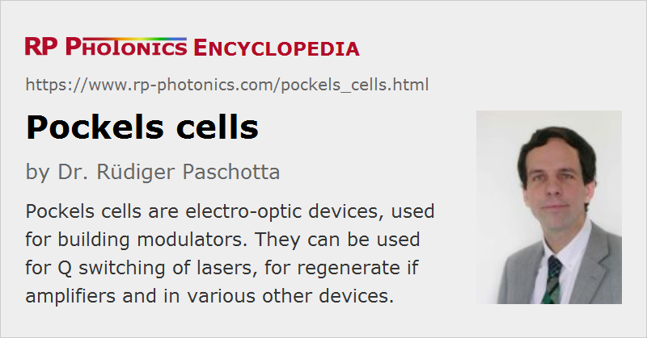

Pockels Cells
Definition: electro-optic devices, used for building modulators
Alternative term: electro-optic modulators
German: Pockelszelle
How to cite the article; suggest additional literature
Author: Dr. Rüdiger Paschotta
A Pockels cell is a device consisting of an electro-optic crystal (with some electrodes attached to it) through which a light beam can propagate. The phase delay in the crystal (→ Pockels effect) can be modulated by applying a variable electric voltage. The Pockels cell thus acts as a voltage-controlled waveplate. Pockels cells are the basic components of electro-optic modulators, used e.g. for Q switching lasers.
Geometries and Materials
Pockels cells can have two different geometries concerning the direction of the applied electric field:
- Longitudinal devices have the electric field in the direction of the light beam, which passes through holes in the electrodes. Large apertures can easily be realized, as the required drive voltage is basically independent of the aperture. The electrodes can be metallic rings (Figure 1, left) or transparent layers on the end faces (right) with metallic contacts.
- Transverse devices have the electric field perpendicular to the light beam. The field is applied through electrodes at the sides of the crystal. For small apertures, they can have lower switching voltages.
Common nonlinear crystal materials for Pockels cells are potassium di-deuterium phosphate (KD*P = DKDP), potassium titanyl phosphate (KTP), β-barium borate (BBO) (the latter for higher average powers and/or higher switching frequencies), lithium niobate (LiNbO3), lithium tantalate (LiTaO3), and ammonium dihydrogen phosphate (NH4H2PO4, ADP).
Half-wave Voltage
An important property of a Pockels cell is the half-wave voltage Uπ (also called Uλ/2 or Vλ/2). This is the voltage required for inducing a phase change of π, equivalent to a half an optical wavelength. In an amplitude modulator, the applied voltage has to be changed by this value in order to go from the operation point with minimum transmission to that with maximum transmission.
The half-wave voltage of a Pockels cell with transverse electric field depends on the crystal material, the electrode separation, and the length of the region where the electric field is applied. For larger open apertures, the electrode separation needs to be larger, and hence also the voltages.
For a Pockels cell with longitudinal electric field, the crystal length does not matter, since e.g. a shorter length also increases the electric field strength for a given voltage. Larger apertures are possible without increasing the half-wave voltage.
Typical Pockels cell have half-wave voltages of hundreds or even thousands of volts, so that a high-voltage amplifier is required for large modulation depths. Relatively small half-wave voltages are possible for highly nonlinear crystal materials such as LiNbO3, and for integrated optical modulators with a small electrode separation, but such devices have a limited power handling capability.
Example for Intensity Modulation with a Pockels Cell
As an example, consider a simple intensity modulator based on a Pockels cell, where the input beam has its linear polarization at an angle of 45° against the optical axis of the nonlinear crystal. We assume that the crystal has no birefringence without an applied electric field, and that it has a given half-wave voltage Uπ. Behind the crystal, we have a polarizer which is aligned such that we obtain 100 % transmission (disregarding some parasitic losses) without an applied voltage. In that situation, we can consider the transmitted field to be a superposition of two in-phase field components of equal strength. With an applied electric field, those field components acquire a phase difference of Δφ = π U / Uπ. The total transmitted amplitude is then proportional to 0.5 · (1 + exp iΔφ), and we obtain the following result for the power transmission:
If the polarizer is rotated such that we get zero transmission for zero voltage, the formula contains sin instead of cos.
The calculation demonstrates that in order to switch the transmission of an identity modulator between zero and 100%, one needs to modify the applied voltage just by one half-wave voltage. Typically, one would vary the voltage between zero and the half-wave voltage, although in principle one may also vary it between −Uπ / 2 and +Uπ / 2.
Modulation Bandwidth
The possible modulation bandwidth with a Pockels cell can be very high – many megahertz, possibly even multiple gigahertz. It is essentially limited only by the speed with which the electric field strength in the electro-optic crystal can be modified. As such, it is essentially limited by the used Pockels cell driver electronics, and possibly by the cable connection between the driver and the cell. However, Pockels cells with a high electrical capacitance make it more difficult for the driver to achieve a high bandwidth. Therefore, it is beneficial to use crystal materials with a low dielectric susceptibility εr. Besides, the chosen electrode geometry can play a role, and that may also be influenced e.g. by requirements concerning the open aperture.
Suppliers
The RP Photonics Buyer's Guide contains 34 suppliers for Pockels cells. Among them:
Questions and Comments from Users
Here you can submit questions and comments. As far as they get accepted by the author, they will appear above this paragraph together with the author’s answer. The author will decide on acceptance based on certain criteria. Essentially, the issue must be of sufficiently broad interest.
Please do not enter personal data here; we would otherwise delete it soon. (See also our privacy declaration.) If you wish to receive personal feedback or consultancy from the author, please contact him e.g. via e-mail.
By submitting the information, you give your consent to the potential publication of your inputs on our website according to our rules. (If you later retract your consent, we will delete those inputs.) As your inputs are first reviewed by the author, they may be published with some delay.
See also: Pockels effect, electro-optic modulators, phase modulators, intensity modulators, nonlinear crystal materials, Q switching
and other articles in the category photonic devices
|  |
If you like this page, please share the link with your friends and colleagues, e.g. via social media:
These sharing buttons are implemented in a privacy-friendly way!